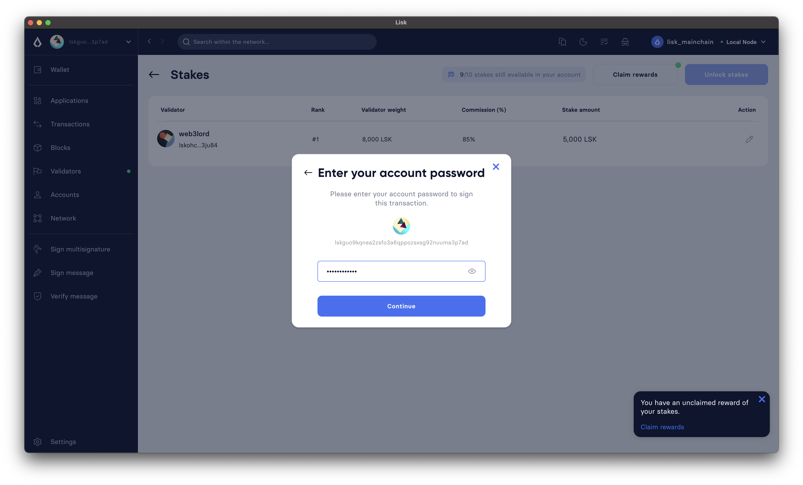

How to share block rewards
On this page, we’ll talk about how a validator can enable reward sharing with their stakers and how the shared rewards can be later claimed by the stakers.
What is reward sharing?
In the Lisk protocol, validators receive rewards for generating blocks. Rewards are distributed between validators and their stakers as follows: a certain part of the rewards is awarded directly to the validator as a commission. Each validator chooses the precise percentage of the commission; then, the remaining rewards are shared among the stakers of the validator. Since a validator also self-stakes, they earn rewards along with other stakers, in proportion to their staked amounts.
| Validators need to self-stake for their accounts and enable generation to become eligible to generate blocks. As a result, validators receive additional rewards as per their self-stake, just like their other stakers do. For example, consider an active validator has 0% commission, and at the same time, no other accounts are staking for the validator. In this case, the validator would still receive 100% of the block rewards. |
The reward-sharing mechanism is part of the PoS module. To learn more about how reward sharing works in Lisk Protocol, see LIP 70.
The commission values can range between 0 and 10000 (both inclusive), corresponding to percentages with two decimal places, which can be obtained by dividing the value by 100. For example, a commission value of 1000, corresponds to a 10% commission.
Initially, after the validator’s registration the commission of a validator is initialized with 100%. Afterward, it can be decreased by submitting a commission change transaction.
| A validator’s commission can be decreased at any time, by any value, however, the commission can only be increased by 5% in a single change commission transaction. The validator has to wait for 28 days until they can increase the commission again. For more information, see Constraints on Commission Increase. |
Prerequisites and Background
-
To earn rewards, a staker must stake LSKs for an active block-generating validator. To learn more about staking, see How to stake and un-stake tokens.
Once you successfully stake for a validator, you can see your stakes by invoking the pos_getStaker endpoint. Each time a validator becomes part of the block generation round, there are chances that the validator will be selected to generate an upcoming block.
To check if the validator is in the list of active validators, look for the validator in the response of chain_getGeneratorList. If the validator is in the returned list then, soon your validator will be generating a block and as a result will earn rewards. The estimated rewards for a validator can be checked via the dynamicReward_getExpectedValidatorRewards endpoint.
1. Sharing rewards
1.1. Sharing via Lisk Desktop
To share rewards via Lisk Desktop, the validator should be logged in to their account and then perform the following steps:
-
Go to My validator profile, and click on the edit icon right next to the current
Commissionvalue: -
Type
85, in the Edit Commission dialog box, and click on the Confirm button. In this example, the validator is set to keep 85% of the rewards as a commission and share the remaining 15% with their stakers, hence the value of85. -
Lisk Desktop will display the Transaction summary including the existing and new value of commission. If everything looks correct, click on the Confirm button.
-
Finally, enter the password to authenticate the change commission request, and then click on the Confirm and sign button.
-
Lisk Desktop will display an Edit commission successful message after submitting the request successfully.
-
Once the transaction is executed and the block is finalized, the updated commission value will be shown on the My validator profile.
1.2. Sharing via CLI
To share rewards via CLI, an active validator should create a changeCommission transaction to update the commission value.
-
The validator should execute the following command to initiate the commission change process:
-
The validator should enter their
passphraseand thenewCommissionvalue. In this example, the validator is set to keep 85% of the rewards and share 15% with their stakers, hence the value of8500.? Please enter passphrase: [hidden] ? Please enter: newCommission: 8500
-
The
changeCommissioncommand will return the transaction in the HEX string and JSON format. It will also post the transaction to the node since we used the--sendflag earlier.{ "transaction": "0a03706f7312106368616e6765436f6d6d697373696f6e180a20c0843d2a2065984ff3e6fe0d161a0a118c4e5d181a23c18f1d4bf59c78d178b7fcf0cadead320308c03e3a40f4e53ed1aaf56f878ab7cc13514164bbbe403dd52ac558ab88afdf8bc4829fd959aaf913ccf52e755185c681e13f84b4aaa723709faad7bc5de818fa96e48804" } { "transaction": { "module": "pos", "command": "changeCommission", "fee": "134000", "nonce": "10", "senderPublicKey": "65984ff3e6fe0d161a0a118c4e5d181a23c18f1d4bf59c78d178b7fcf0cadead", "signatures": [ "f4e53ed1aaf56f878ab7cc13514164bbbe403dd52ac558ab88afdf8bc4829fd959aaf913ccf52e755185c681e13f84b4aaa723709faad7bc5de818fa96e48804" ], "params": { "newCommission": 8500 }, "id": "7ad7d91488abdb859cf06570b17986a2ac14018584326d302afd0770fba96c86" } } Transaction with id: '7ad7d91488abdb859cf06570b17986a2ac14018584326d302afd0770fba96c86' received by node. -
Upon successful execution of the transaction, the validator’s commission value will be updated. To check the updated values, invoke the pos_getValidator endpoint.
{ "name": "web3lord", "totalStake": "2011000000000", "selfStake": "1011000000000", "lastGeneratedHeight": 4260, "isBanned": false, "reportMisbehaviorHeights": [], "consecutiveMissedBlocks": 0, "commission": 8500, "lastCommissionIncreaseHeight": 271, "sharingCoefficients": [ //This object will automatically have a value, once the validator starts sharing rewards. { "tokenID": "1234567800000000", "coefficient": "0b67f3fb9ef253f78c1b2c" } ], "address": "lskm87us5hykopm2f2nxa92z5ftbr9r52kg5b45e6", "punishmentPeriods": [] }
2. Claiming rewards
After each block is generated, both the block generator and the staker(s) supporting them will earn a set percentage of rewards.
The part of rewards that is attributed to the validator that generated the block is automatically assigned to them by the Lisk Protocol.
This is done by incrementing the availableBalance of the validator’s account by the amount of rewards corresponding to the commission and self-stake.
On the other hand, stakers need to manually claim their rewards, and that can be done via both Lisk Desktop and CLI.
The part of rewards belonging to stakers, gets locked in the validator’s account, by the PoS module, (by increasing its lockedBalance) until each staker claims their rewards.
For more information, see Distribution of Rewards.
2.1. Claiming via Desktop
To claim rewards via Lisk Desktop, a staker must log in to their account on Lisk Desktop and perform the following steps to collect earned rewards:
-
As soon as the staker earns a reward, they will be notified about it by Lisk Desktop. The Claim rewards option will be available in the pop-up notification and also in the Stakes page of the staker’s account.
You can click directly on the Claim rewards option available on the pop-up notification to proceed with claiming rewards. However, the pop-up notification will disappear after a few moments, and in case you miss clicking on it, you can try claiming rewards via the Stakes screen. Click on the Stakes button to continue the reward-claiming process.
-
On the Stakes page, click on the Claim rewards button.
-
A dialogue box will open where the summary of earned rewards will be shown to the staker, click on the Claim rewards button available on the dialogue box.
-
Lisk Desktop will display a Transaction summary to the staker. If everything looks correct, click on the Confirm button.
-
Finally, enter the password to authenticate the reward-claiming request, and then click on the Continue button.

-
Upon successful request submission, Lisk Desktop will display a Transaction submitted successfully message.
-
Once the transaction is executed, the staker’s account balance will increase as per the earned reward, and the corresponding amount will be reduced from the validator’s locked balance.
2.2. Claiming via CLI
To claim rewards via CLI, a staker must perform the following steps to collect earned rewards:
-
Check available rewards by invoking the pos_getClaimableRewards endpoint by passing the staker’s
address.{ "rewards": [ { "tokenID": "1234567800000000", "reward": "10000" } ] } -
Any
rewardcan be claimed by the staker by executing theclaimRewardscommand. -
The staker should enter their
passphraseto authenticate.? Please enter passphrase: [hidden]
-
The
claimRewardscommand will return the transaction in the HEX string and JSON format. It will also post the transaction to the node since we used the--sendflag earlier.{ "transaction": "0a03706f73120c636c61696d52657761726473180720c0843d2a20145eb22910d905ba51a9ee2d0066ae97bebbff86084ce57f3df446b0cdd7942632003a40d5148b0c70efea8edeb6cd99ed0df23d72c1ec4845f796e8de510f30e56bd0ec7c20f744a4c4211040382396715a667a2d1e8ed3655020d844d1ba333db1ed01" } { "transaction": { "module": "pos", "command": "claimRewards", "fee": "127000", "nonce": "7", "senderPublicKey": "145eb22910d905ba51a9ee2d0066ae97bebbff86084ce57f3df446b0cdd79426", "signatures": [ "d5148b0c70efea8edeb6cd99ed0df23d72c1ec4845f796e8de510f30e56bd0ec7c20f744a4c4211040382396715a667a2d1e8ed3655020d844d1ba333db1ed01" ], "params": {}, "id": "3da8f7278713d33fabe66a4da50cdbdcee674abc35ea0c12be4c65e0c162adf6" } } Transaction with id: '3da8f7278713d33fabe66a4da50cdbdcee674abc35ea0c12be4c65e0c162adf6' received by node. -
Once the transaction is executed, check your token_getBalance endpoint. The staker’s account balance should have increased as per the reward earned.